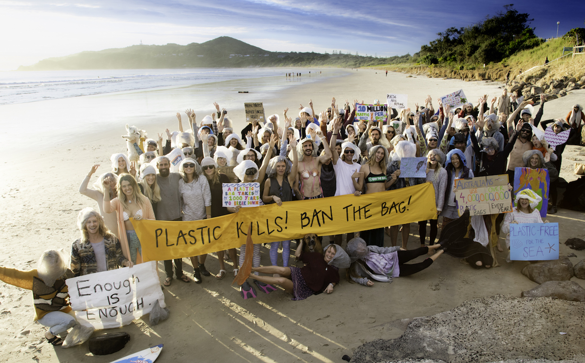

|
1.REDUCE We should reduce the usage of plastic bags. Plastic bags should be replaced with bags that are made of cloth. Instead of buying plastic bags in shopping malls, government should encourage people to bring their own bags. By doing this, the usage of plastic bags will definitely reduce. |
2.REUSE Plastic bags can be reused. In order to save our environment and world, we should avoid single-use of plastic bags. For example, we can use old plastic bags as garbage bags. Besides that, we can make good use of old cloths. For instance, we can make our own bags using old cloth and bring them along when we are planning to go for shopping. |
|
3.REMOVE Plastic bags can be reused. In order to save our environment and world, we should avoid single-use of plastic bags. In addition to that, we should pick up the rubbish that is right infront of our eyes. For example, if there is rubbish in our walk way, people or the society should be encouraged to pick the rubbish up and thrown them into the nearest rubbish bins. |
4.REFUSE Refuse is when someone demonstrate or show that one is not willing to do something. It is as simple as saying no to platic bags in shopping malls or saying no to plastic straws when requesting beverages at restaurants or cafes. A "NO" to this would help so much in saving many lives and the environment. |
|
5.RECYCLE The recycling habit should be cultivated in each and everyone in order to save the Earth. Returning single-use plastic bags to the grocery stores is one of the way to recycle the bags. Plastic bags can be collected and sent to recycling centre so that this could reduce plastic pollution. |
6.RALLY  Rally means people come together again in order to continue fighting after a defeat or dispersion. Rally is not neccesary until it affects people, animals and the environment. We should fight against what is right in order to prevent pollution. Rally should be encouraged in all countries in order to prevent plastic polution around the world. |
Copyright © 2019 - Made by: Mitra, Subithira, Ira, Tasnim.